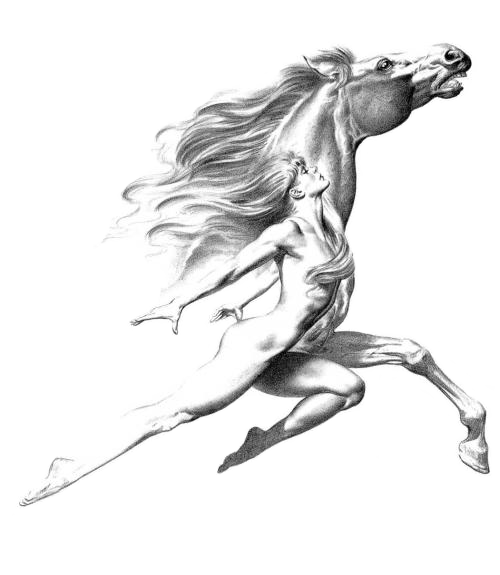

Equine-imity Somatic Horsemanship
Experience Body-Mind Renewal in the Company of Horses
Private, Semi-Private, and Group Sessions
No horse experience or riding required

Somatic means of the body. Somatic horsemanship is body-mind rejuvenation
through physical interaction with horses. Horses restore in us the strength,
coordination, grace, flexibility, and joy we tend to lose in the aging process
and through injury or inactivity.
Somatic Horsemanship Program
In somatic horsemanship sessions, you will experience body-mind wholeness through spending
time in a natural herd in a beautiful open space where you will be able to touch, lead, groom,
and, optionally, sit on a horse. Somatic horsemanship combines the principles of safe,
conventional horse handling with techniques from yoga, tai chi, dance,
and other somatic and healing arts. It includes practices from equine-assisted learning
and psychotherapy, equine-guided psychospiritual development,
natural horsemanship, and sports medicine.
Your body is your temple and horses lead the way to the altar.
For more information or to schedule an appointment, contact:
Beverley Kane, MD
Program Director, Stanford Medicine and Horsemanship
Certified Horsemanship Association Level 1 Riding Instructor
EAGALA Level 1, 2, and 3 Trained
Diplomate, Sports Medicine, University of London
650-868-3379